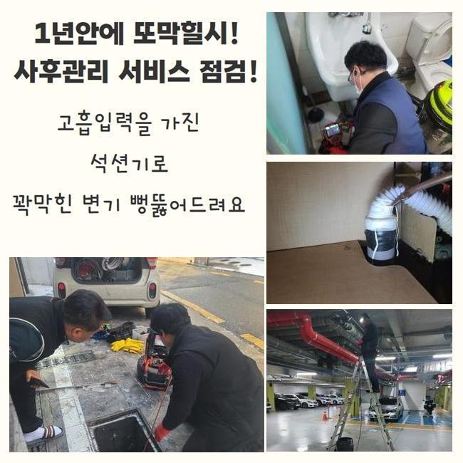
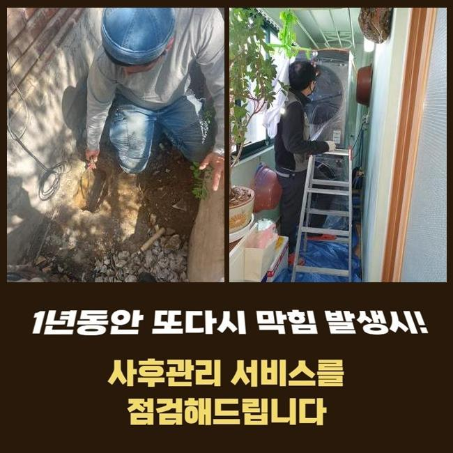
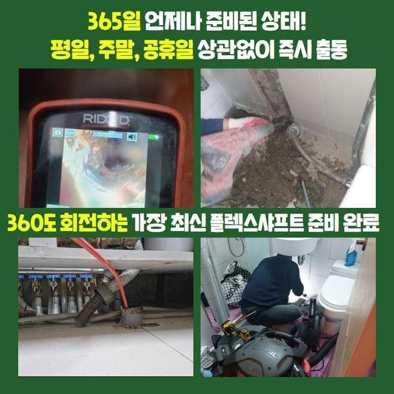
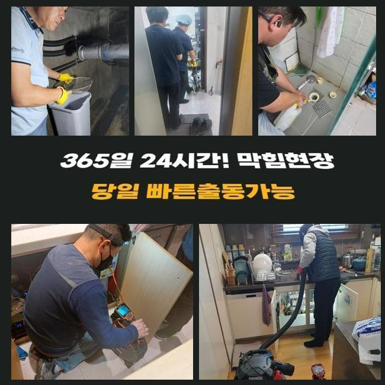
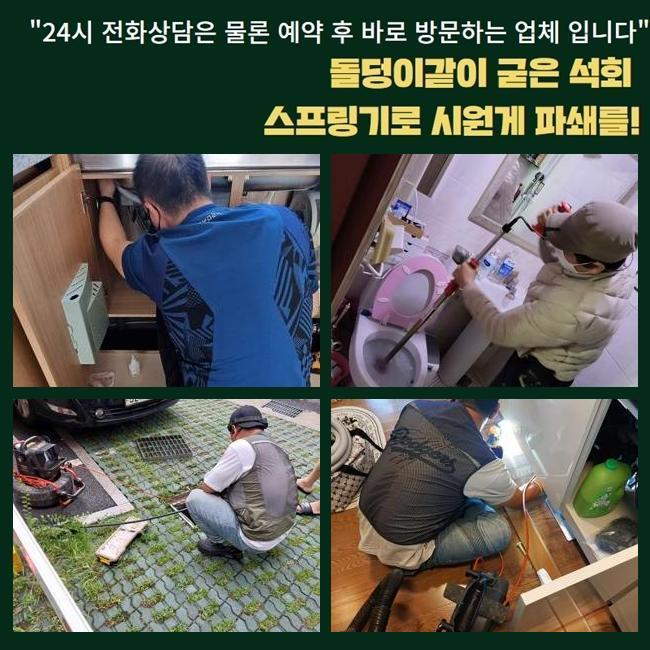
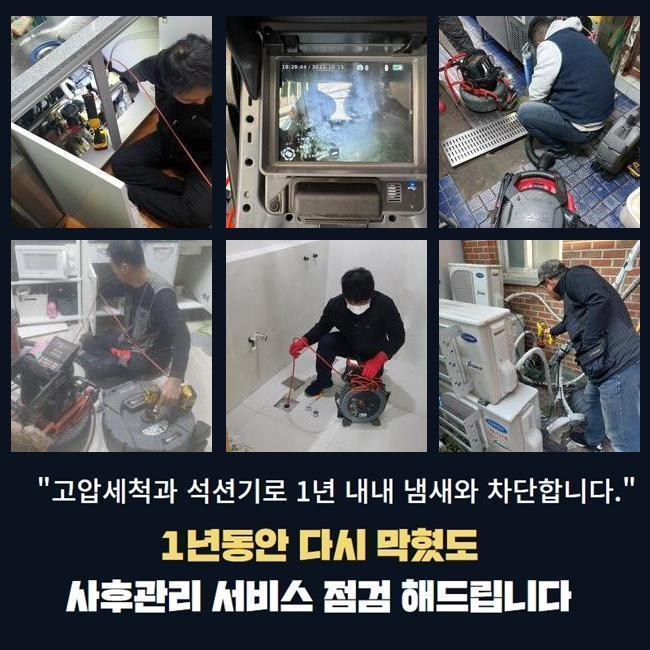
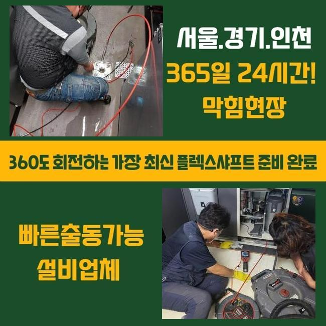

🏠 천안 성환읍씽크대막힘 불당2동 배관내시경카메라 설비
천안 성환읍 싱크대막힘 전문 시공 후기

📋 작업 개요
- 위치: 천안 성환읍, 성환읍, 천안
- 서비스 유형: 싱크대막힘, 하수구막힘, 배관막힘, 누수수리, 역류해결, 뚫는업체, 배관청소, 고압세척
- 작업 일시: 2025. 6. 10. 20:19
- 업체명: 하수구수사대 (010-5615-2118)
🔍 문제 상황
천안 성환읍씽크대막힘 불당2동 배관내시경카메라 설비
최근에 상가 건물쪽에서 씽크대배수구 막힘문제로 긴급한 문의하셔서 저희들이 내방드려 보았죠
지금 상태로는 물빠짐이 정상적으로 이루어지지 않았고 씽크대에서 역류현상도 발현되어 조속한 처리가 요구되었어요
역류가 일어나면 악취현상까지 발현될수 있죠
의뢰자분이 일러주신 걸로는 물자체가 느린속도로 흘러가던 싱크대배관이 이틀정도 지나니 역류현상이 발생한 상황이라고 설명해 주셨어요
이러한 경우라면 단순하게 막히게 된것이 아니며 배관안쪽에 기름슬러지가 다량으로 누적되어있을 확률이 높은데요
씽크대막힘을 처리해 드리고자 현장으로 이동하여 현재상태에 대하여 세세하게 파악해보고자 하부장쪽을 열어봤죠
열어보니 눈에 띈 것은 하수도와 이어진 주름 호스 부근의 심한 역류 흔적이었어요
역류한 물들과 오염물질들이 호스주위로 넘치게 되면서 문제가 좋지않았죠
배관에서 정체가 생겨 물들이 점진적으로 흘러가지 못하게 되어 역류사태가 발현된것으로 알수 있었어요
셀프로 타파가 가능한 방법에 대하여 간략히 설명드려 볼게요
락스를부어 60분이상 방치한후 잔해물과 희석시켜 배관을 세척해주는 셀프 청소법이죠

🔎 원인 분석
💡 전문가 진단: 정밀 진단 장비를 사용하여 슬러지의 고착 여부를 판명하고 타격/세척 작업을 실시했습니다.
💡 전문가 진단: 정밀 진단 장비를 사용하여 슬러지의 고착 여부를 판명하고 타격/세척 작업을 실시했습니다.
💡 전문가 진단: 정밀 진단 장비를 사용하여 슬러지의 고착 여부를 판명하고 타격/세척 작업을 실시했습니다.
그러나 락스를 통해 세척하는것은 깔끔하게 막힘을 처리하기란 어렵죠
배관이 막혀버린 연유에 대하여 세세하게 파악하고 있어야만 하는데요 막힘원인이 기름슬러지 때문이라면 끓는물을 부어서 제거해야 해요
기름때가 쌓인 경우 시간지나면 끈적하고 단단하게 굳어버리기에 물리방법을 이용해서 소거시키는게 효율적이에요
혹시나 음식찌꺼기의 걸림인 것이라고 생각이된다면 클리너제품을 활용하여 처리해보는게 좋겠습니다
시중락스는 원래의 용도자체가 세균을 소독하는 용도이기에 기름슬러지를 분해시키는 기능은 부족한데요
펑크린의 경우에는 락스랑 틀리게 배관을 뚫을때나 세척시에 활용되는 용액인데요
활용법은 막히게된 위치에 용액을 종이컵에 가득 담아 부어서 1시간쯤 대기하고나서 물과함께 청소해주는 작업으로 효과가 나타날수 있답니다
클리너나 락스는 유독성 물질이 포함되있기에 무조건 비닐장갑을 착용한 상태로 작업해주시고 공기 순환이 적절한 구역에서 활용하실것을 권장드립니다
설명해 드렸던 방식들로 시도해봐도 뚫리지 않는다면 전문가에게 맡기시는게 현명한 선택이에요
혼자서 직접 작업을 시도해보다 외려 배관이 파손되는 경우로 이어지게되어 역류나 누수같은 피해들로 야기될수있기 때문이랍니다
오늘 아파트는 배관의 넓이가 굉장히 좁았어요
수도를 틀은후 배수상태를 체크했는데 막히는 구간이 있는것을 살필수 있었어요
그렇기에 막힘문제의 확실한 원인에 대해서 파악하는것이 중요했죠

🔧 작업 과정
배수관이 좁다보니 배관카메라 진입공간을 확보해주고자 타공해주었죠
수리작업시 필요한 만큼만 작은크기로 타공하므로 문제될것이 크게 없습니다
확보되어진 구멍으로 내시경기계를 진입시켰으며 연결된 스크린으로 현재상태를 파악했는데요
내시경도구는 명확한 진단을 위하여 반드시 요구되는 중요한 기기로 육안만을 통하여 살펴보기 힘든곳을 파악해보는데 유용합니다
어두운곳의 경우에도 조명을 비춰서 현재모습을 전송해주므로 오염물질의 지점및 종류를 판별이 가능해요
하수도 내부속에 리모델링시 유입된걸로 예측되는 다양한 오염물들이 대량으로 존재했죠
관로 내벽쪽에 달라붙은 상태였기에 단순한 과정으로는 소거시키는것이 불가능한 상황이라고 봐도 무방했죠
석회화가 심각하지 않다면 석션작업을 통하여 잔해물을 빨아들여주는것이 가능하답니다
석션기구의 용도는 깊은곳까지 하수와 오염물질을 빨아들여주는 장비인데요
하수구가 막혔을때 다각도로 사용되고 있죠
샤프트라고 불리는 기계를 사용하여 고착된 덩어리를 분쇄하는 방법으로 진행해 보기로 했어요
샤프트기는 장비끝에 노커체인이 부착되어있는 장비죠
작동시키면 180도 빙빙 돌며 석회덩어리를 분쇄해 냅니다
적절한 강도에 맞춰 조절하면서 사용해야 오염물들이 확실히 제거된답니다
하수관내에 파손을 일으키지않게 주의하는게 중요한데요
분쇄과정을 착수할때 내시경기계도 투입한후 배관속을 세세하게 살펴보며 안전성을 유의하고있죠
전체적인 작업과정을 끝낸후에도 확실하게 세척이 완료됐는지 재차 내시경을 통해 체크해주고 나서야 마친답니다
마지막으로 배수점검을 고객님과 함께 확인해 보았죠
원활히 배관이 세척되어 물들이 정상적인 상태로 배수되는것을 살펴볼수 있었답니다
막힌원인을 타파하고 수립계획이 정확히 진행될수 있게끔 명확하게 진행했답니다


✅ 작업 완료
테스트까지 끝나면 고객분에게 막힘문제와 연관하여 예방법에 대한 부분들을 설명드리고 있어요
막힘을 내버려 둔다면 복합적인 증상으로 연결될수 있어요
상가나 식당같이 많은 사람이 이용하는 장소라면 빠른 처리가 필요할 겁니다
막힘발생시 배관업체를 탐색 중이시라면 저희업체로 의뢰주셔서 훌륭한 결실을 확인해보셔요!
이밖으로도 궁금한것들이 있으시면 시간상관없이 문의하셔도 괜찮답니다




⚠️ 베란다 누수 및 방수 관리 방법
- ✅ 비가 많이 올 때 창틀 주변이나 아래층 천장에 얼룩이 생기는지 정기적으로 확인해 보세요.
- ✅ 우수관 주변 실리콘 마감이 들뜨거나 깨진 틈새가 있는지 손상 여부를 수시로 체크하세요.
- ✅ 베란다 바닥 타일의 줄눈(메지)이 소실되면 그 틈으로 물이 침투하여 누수가 유발됩니다.
- ✅ 누수 의심 증상 발견 시 방치하면 아래층 손실이 커지므로 즉시 전문가의 진단을 받으십시오.
💡 핵심 정리
- 확실한 장비 작업(내시경 점검 및 샤프트 스케일링)으로 원인을 뿌리 뽑습니다.
- 작업 후 1년 이내에 동일한 부위 재발 시 100% 무상 A/S 서비스를 보장합니다.
- 서울 · 경기 · 인천 전 지역에 24시간 언제든 긴급 출동할 수 있도록 항시 대기 중입니다.
❓ 자주 묻는 질문 (FAQ)
🚨 천안 성환읍 싱크대막힘 문제로 고민이신가요?
정확한 원인 진단과 확실한 시공으로 재발 없는 해결을 약속드립니다.
24시간 긴급 출동 | 서울 · 경기 · 인천 전지역 | 1년 내 재발 시 무상 A/S